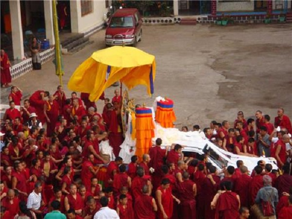

Sikkim
- Home
- Food

- Fashion
- Festival
- Lhabab Duchen
- International Flower
- Bumchu Festival

Bumchu Festival
A sacred pot, Bhumchu contains holy water which is blessed by Ngadak Sempa Chenpo after he said the Mane Mantra five billion times. The amount of water in the Bumchu is said to predict the fate of Sikkim for the whole year. If it is seen that the Bumchu is full to the brim it signifies that the year will be a year of revolutions and turmoil. On the other hand if the level of the water is low then the year will be affected by ailments and diseases. However if the Bhumchu is half full, then the year will be a prosperous one.

International Flower
India is known for its many hued fairs and festivals that form an integral part of the attraction of the country. Each state, race and culture comes up with different fairs and festivals that are different from each other, each with different origin and each has a different way of celebration. The Indian calendar gives you a long list of fairs and festivals- in all corners of the country. Some festivals are famous celebrated by all over India while others are nondescript affairs. - Bumchu Festival
Lhabab Duchen
Buddha was the enlightened one, because it is said in the Dhammapada that "A unique Being, an extraordinary Man arises in this world for the benefit of the many, for the happiness of the many, out of compassion for the world, for the good, benefit, and happiness of gods and men. Who is this Unique Being? It is the Tathagata, the Exalted, Fully Enlightened One.". - International Flower
- Lhabab Duchen